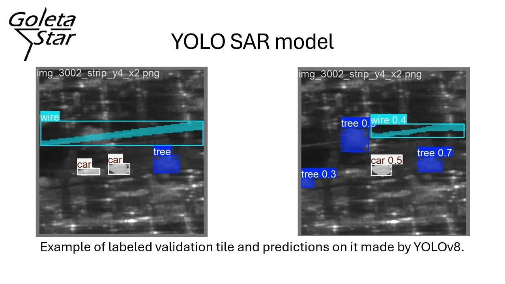

YOLOV8 AI model for recognizing objects in SAR imagery
Published Apr 29, 2026 • Updated Jul 20, 2026

A YOLOv8 prediction of a SAR image tile. The hand-made labels are shown on the left and the predictions on the right.
Project Overview
SAR is a type of imaging that can work regardless of time of day or weather. This is because it uses radio waves instead of light like optical cameras. Recent work in computer vision has shown impressive object recognition capabilities on optical images. This work investigates the feasibility of one of these methods, YOLOv8, on SAR images. This is challenging because SAR images are very noisy, blurry, and have unique imaging artifacts such as layover. Furthermore, there is a great lack of publicly released datasets at the time of the work.